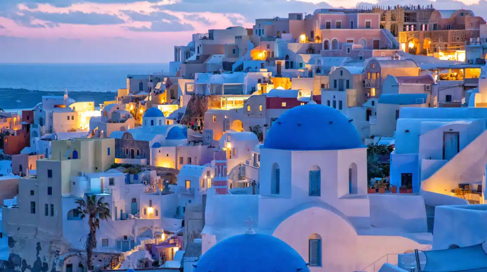

Santorini, Greece

Highlights of Santorini Greece
Santorini, Greece is known for its breathtaking sunsets, whitewashed cliffside villages, volcanic beaches, and a timeless blend of natural beauty, history, and island charm.